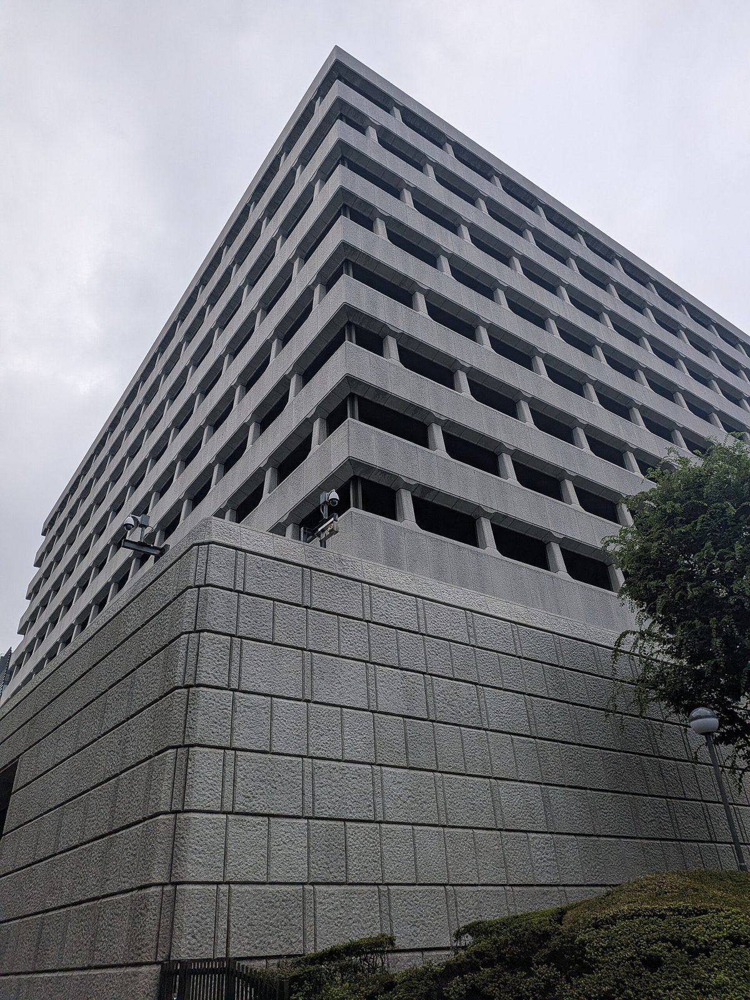

[한일수교 60년⑳] 니케이는 사상 최고인데 세계 10위 안에 일본 기업은 없다
1989년 세계 시총 10위 안에 일곱이던 일본, 2026년에는 영(0)이다
삼성전자 1조5410억달러로 세계 10위… 도쿄증시 1위 도요타는 44조엔
한일 통화스왑 100억달러, 2026년 10월 15일 방콕에서 3년 더 늘렸다
AI경제저널=김갑봉 기자 | 일본 증시는 2026년 사상 최고를 거듭 갈아치웠다. 상장사 순이익도 여섯 해 연속 최고다. 그런데 세계 시가총액 10위 안에 일본 기업은 없다. 그 자리에는 2026년 6월 삼성전자가 들어갔다. 1989년 10위 안에 일곱을 넣었던 나라와, 그때 반도체를 막 시작한 나라의 자리가 37년 만에 뒤집혔다.

니케이 6만3000, 그래도 10위 안에는 없다
1989년 12월 29일 니케이 지수는 종가 3만8915.87로 정점을 찍었다. 그 기록은 34년이 지난 2024년 2월에야 깨졌다. 그리고 2026년 들어 기록은 매달 다시 쓰였다.
2026년 1월 15일 니케이는 5만4000선을 넘었다. 5월 13일에는 6만3000선을 돌파해 종가 기준 사상 최고를 경신했다. 6월 15일에는 하루에 4.99% 뛰어 7만선을 눈앞에 뒀다. 일본 상장사 순이익은 2026년 기준 여섯 해 연속 사상 최고다.
그런데 세계 시가총액 상위 10위 안에 일본 기업은 한 곳도 없다. 1989년 버블 절정기에는 일곱이 있었다. 일본전신전화(NTT)와 대형 은행들이 세계 상위를 휩쓸었다.
도쿄증시 안에서는 1위 자리가 2026년 한 해에 네 번 바뀌었다. 연초 도요타자동차가 1위였고, 6월 1일 소프트뱅크그룹이, 6월 4일 도요타가 다시, 6월 12일 키옥시아홀딩스가, 7월 13일 미쓰비시UFJ파이낸셜그룹이 차례로 올랐다. 9월 18일 종가 기준으로는 도요타가 44조1000억엔으로 1위, 미쓰비시UFJ가 42조9000억엔으로 2위다. 키옥시아는 한때 60조엔대까지 갔다.
삼성전자, 세계 10위에 올랐다
2026년 6월 2일 삼성전자 시가총액이 1조5410억달러를 기록했다. 세계 상장기업 가운데 10위다. 메타플랫폼의 1조5240억달러를 제쳤다. 9위 테슬라의 1조5610억달러와는 200억달러 차이였다.
같은 날 1위는 엔비디아로 5조4340억달러였다. 10위 안에는 엔비디아와 알파벳, 애플, 마이크로소프트, 아마존, TSMC, 브로드컴, 사우디 아람코, 테슬라, 그리고 삼성전자가 들어갔다. 일본 기업은 없다.
도쿄증시 1위인 도요타의 44조1000억엔과 견주면 차이가 뚜렷하다. 환율에 따라 달라지지만 삼성전자 한 곳의 시가총액이 도쿄증시 1위 기업의 몇 배에 이른다.
반도체에서 갈렸다. 1990년대 초 일본은 세계 반도체 시장의 절반을 차지했다. 2024년 일본의 반도체 설계 분야 점유율은 9%다. 디램은 삼성전자와 SK하이닉스가 66~70%를 쥐고 있고 낸드는 삼성이 30%대 초반으로 앞선다. 소니가 쥐던 TV 시장도 삼성과 LG가 가져갔다.
다만 일본이 다 내준 것은 아니다. 반도체 장비와 소재에서 일본은 여전히 세계 시장의 30% 안팎을 차지한다. 2026년 도쿄증시에서 키옥시아가 한때 1위에 오른 것도 메모리 업황 덕이다.
한일 통화스왑, 2029년 11월까지
2026년 10월 15일 태국 방콕에서 이형일 부총리 겸 재정경제부 장관과 가타야마 사쓰키(片山さつき) 일본 재무상이 만났다. G20·G7 재무장관회의와 국제통화기금(IMF)·세계은행 연차총회에 참석한 자리였다.
두 사람은 올해 만기였던 100억달러 규모 한일 통화스왑을 3년 더 늘리기로 합의했다. 2029년 11월까지다. 현 계약은 2023년 12월 3년 기한으로 맺은 것이었다.
두 나라는 통화스왑이 한일 금융협력의 상징이라는 데 뜻을 같이했고, 양국 외환당국이 충분한 외화유동성을 갖고 있다는 인식도 공유했다. 2026년 3월 도쿄에서 연 한일 재무장관회의 합의에 따라 다음 회의는 되도록 빨리 한국에서 열기로 했다.
한중 통화스왑은 2025년 11월 1일 갱신해 4000억위안, 560억달러 상당 규모로 2030년 10월 31일까지 유효하다. 일중 통화스왑은 2000억위안, 280억달러 상당으로 2027년 10월 25일까지다.
세 나라 가운데 중국과 일본 양쪽 모두와 통화스왑을 가진 나라는 한국뿐이다. 역내 금융안정망에서 한국이 연결고리에 서 있다는 뜻이다.
1965년 18 대 100에서 지금 70 대 100으로
1965년 수교 당시 한일 무역은 일본이 100을 수출할 때 한국은 18을 수출했다. 2023년에는 일본이 100을 수출할 때 한국이 70을 수출한다. 무역수지는 여전히 일본이 흑자지만 간격은 좁혀졌다.
2023년 한국의 대중 총교역액은 2677억달러, 대일 총교역액은 767억달러다. 중국이 한국의 최대 교역국이고 일본이 그다음 자리에 있다.
기술 간격도 줄었다. 1990년대에 일본이 10년 앞섰다면 지금은 2~3년이다. 5세대 이동통신과 배터리, 메모리 반도체, 유기발광다이오드(OLED) 디스플레이에서는 한국이 세계 1위다.
2019년 일본이 불화수소 수출을 규제했을 때 한국은 국산화로 버텼다. 그래도 소재·부품·장비에서 일본 의존은 남아 있다. 반대로 도쿄일렉트론과 신에쓰화학 같은 일본 장비·소재 기업은 삼성전자와 SK하이닉스가 큰 고객이다. LG에너지솔루션과 삼성SDI, SK온도 일본 소재 기업의 주요 고객이다. 서로가 서로의 거래처다.
묶이지 못한 경제블록
한중일 세 나라의 국내총생산(GDP) 합은 24조~25조달러 규모다. 중국이 약 18조5000억달러, 일본이 약 4조3000억달러, 한국이 약 1조8600억달러다. 국제통화기금 2025년 10월 자료 기준이다. 미국은 27조달러, 유럽연합은 18조달러다. 세 나라 인구를 합치면 16억명이다.
그런데 묶이지 못했다. 한중일 자유무역협정(FTA)은 2012년 협상을 시작했으나 중일 갈등으로 멈췄다. 역내포괄적경제동반자협정(RCEP)이 발효됐지만 관세 철폐율이 낮다. 대외경제정책연구원은 한중일 FTA로 관세를 90% 넘게 없애면 역내 무역이 20% 늘어난다고 봤다.
일본과 중국 사이는 더 나빠졌다. 2012년 센카쿠 국유화 이후 경색됐고, 후쿠시마 오염수 방류로 중국이 일본 수산물 수입을 막았다. 2025년 11월 다카이치 사나에 일본 총리의 대만 유사시 발언 뒤에는 중국 외교부가 그의 '총리' 직함까지 생략하기 시작했다.
그 사이에서 한국은 양쪽과 다 거래한다. 반도체는 미국과 묶였고 배터리와 전기차는 중국과 얽혀 있다. 인도태평양경제프레임워크(IPEF)에 들어가면서 RCEP도 비준했다.
니케이 최고치가 가리지 못하는 것
2026년 일본 증시가 사상 최고를 거듭한 것은 사실이다. 상장사 순이익도 여섯 해 연속 최고다. 그러나 세계 시총 10위 안에 일본 기업이 없다는 사실은 그대로다. 주가는 올랐지만 세계 시장에서 차지하는 자리는 돌아오지 않았다.
반대로 한국은 삼성전자 한 곳으로 10위 안에 들어갔다. 그 한 곳에 기댄 구조라는 점은 한국이 안고 있는 다른 문제다.
일본이 35년에 걸쳐 내준 것은 제조 기술이 아니라 새로 판을 짜는 자리였다. 전기차는 하이브리드에 머무는 사이 테슬라와 비야디(BYD)가 가져갔고, 인공지능과 플랫폼에서는 일본 기업이 나오지 않았다. 니케이 6만3000은 그 사실을 가리지 못한다.
한국이 지금 10위에 있다고 해서 다음 35년이 보장되지는 않는다. 1989년의 일본도 그랬다.
참고문헌
·"한일, 100억弗 규모 통화스와프 3년 연장", 파이낸셜뉴스, 2026년 10월 15일. https://www.fnnews.com/news/202610151813423424
·"삼성전자, 메타 제치고 세계 시총 10위…테슬라 턱밑 추격", 파이낸셜뉴스, 2026년 6월 2일. https://www.fnnews.com/news/202606021457355595
·"日증시 시총 1위 '대혼전'…올해 4개 기업이 정상 차지", 알파경제, 2026년 9월 21일. https://www.alphabiz.co.kr/news/articleView.html?idxno=189104
·"日닛케이지수 6만3천선 돌파…종가 최고치 경신", 연합뉴스, 2026년 5월 13일.
·"일본 니케이지수, 5만4000 돌파", 글로벌이코노믹, 2026년 1월 15일. https://www.g-enews.com/article/Global-Biz/2026/01/202601151901361007fbbec65dfb_1
·"日 상장사 순이익 6년 연속 사상 최고", 한경비즈니스, 2026년 5월. https://magazine.hankyung.com/business/article/202605267810b
·한국은행, "한국은행·중국인민은행 통화스왑 계약 연장", 2025년 11월 3일.
·日本銀行, 「中国人民銀行との二国間通貨スワップ取極の延長」, 2024년 10월 25일.
·일본 재무성, 「第3次日韓通貨スワップ取極の締結」, 2023년 12월 1일.
·IMF, "World Economic Outlook Datamapper", 2025년 10월.
·대외경제정책연구원, "한·일 FTA의 경제적 효과와 정책시사점".
※ 이 기사는 AI 프로그램 클로드를 활용해 작성했습니다.
관련기사
- [한일수교 60년㉑] 한중 하늘길 7년 만에 주 70회 열렸다, 그래도 자유화는 아니다
- [한일수교 60년⑲] 하버드 기금 1년에 11조 늘 때, 도쿄대와 서울대는 제자리였다
- [한일수교 60년㉒] 일본 방위비 2% 2년 앞당겼다, 미국은 3.5%를 요구한다
- [한일수교 60년⑱] 30년 멈춘 일본 임금이 8개월 올랐다, 그래도 한국보다 낮다
저작권자 © AI경제저널 무단전재 및 재배포, AI학습 및 활용 금지